Step Eight: MM/MD Calculation of Coordination Compounds
1. Use of UFF (Universal Force Field) Parameters
Building molecular models of coordination compounds is often problematic. This is mainly due to the lack of appropriate MM parameters for metal atoms. One reasonable approach is to use UFF (universal force field) parameters developed by Rappé and coworkers (J. Am. Chem. Soc. 114, 10024-10035 (1992)). Although estimation of the UFF parameters from the molecular structure is rather complicated, it can be automated by computer programs. In the following, you will see how Molby can help modeling of coordination compounds with the UFF parameters.
Suppose we want to build a model of (terpy)PtCl, where terpy is 2,2':6',2"-terpyridine.

We need to build the molecular structure first. One approach is to build the organic part (terpy), and put metal atoms afterwards. Here, we will go through another route, namely start from the metal fragment and add ligands afterwards. In general, this approach should be more successful in building models of coordination compounds.
Select "Open Predefined..." menu item, and find "MX4 square-planar" like below.
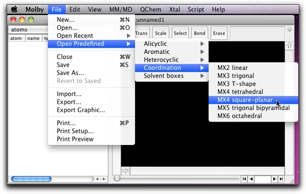
A square planar fragment of "CuCl4" appears on the screen.
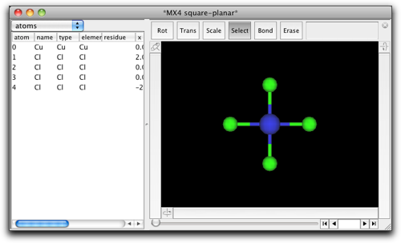
Choose the "Select" tool, double click on one of the chlorine atoms, and type "C6H5".
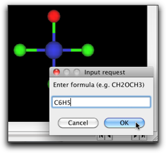
You see now a phenyl group is attached to the metal atom. The orientation of the phenyl ring needs to be fixed. Select the metal-C bond, and rotate the phenyl ring so that the ring is approximately coplanar with the metal-ligand plane.
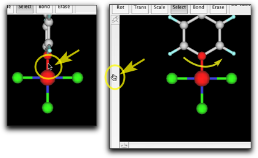
Attach two other phenyl groups in a similay manner.

Remove the hydrogen atoms and create C-C bonds. Double-click on the carbon atoms connected to the metal, and change them to "N". Double-click on the metal atom and change it to "Pt".


Now the molecular structure is complete. Next we need to assign the MM parameters. To do this, select the "Guess UFF Parameters..." from the "MM/MD" menu.

A dialog like below opens up. Here are listed the atoms that are (1) the metal atoms, (2) the ligand atoms that are connected to the metal atoms, and (3) the ligand atoms that are connected to any of the atoms in (2). In other words, the atoms within "two-bonds" distances are shown in this dialog. The Pt atom is shown in red, because it does not have predefined MM parameters. The ligand atoms already have their MM parameters, but if you look closely not all atoms are correctly recognized. For example, the pyridine N atoms are incorrectly assigned as "n3", which is a sp3 nitrogen.
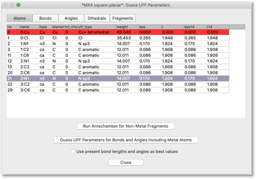
The UFF parameter estimation consists of two stages. The first stage is to assign the types of the ligand atoms. This is basically the same as the procedure described in Step 6, but this time we need to run Antechamber for the non-metal part only. By hitting the button "Run Antechamber for Non-Metal Fragment", Antechamber is executed for each non-metal fragments. You may need to assign the charge for each fragment; for example, if you are using catecholato ligand, that fragment should have charge of -2.
 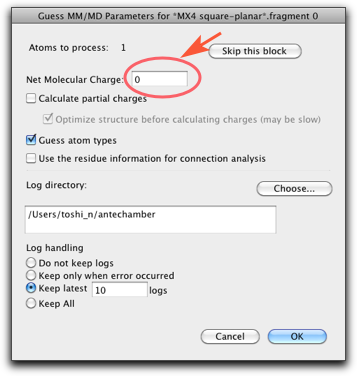
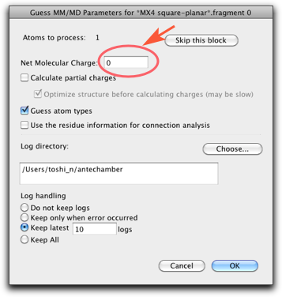
The fragment that are being assigned by Antechamber is shown in the main window as the selection. In this example, the first fragment contains only the chlorine atom, and the second fragment is the terpyridine ligand.
 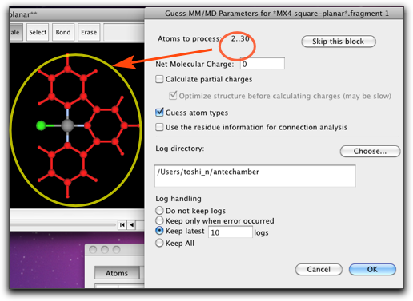
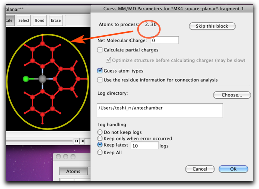
After running Antechamber, the table looks like below. Note that the values in the "type" column have been changed.

Next, we need to assign the "UFF types" to each atoms. In fact, the UFF types are already set in the previous stage. We still need to look at them, and correct the types if necessary. You can select the predefined UFF types from the popup menu.
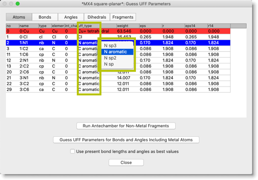
Now we need to assign UFF parameters for the metal atoms. Click the button "Guess UFF Parameters for Bonds and Angles Including Metal Atoms".
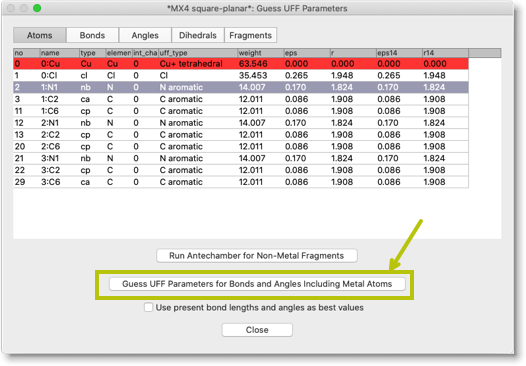
Open the "Bonds" page, and check the columns "k" and "r0". You will find there the proposed values of force constant and equilibrium bond length, according to the UFF force field. If you find, by some reason, the values are not appropriate, then you can change them by hand.
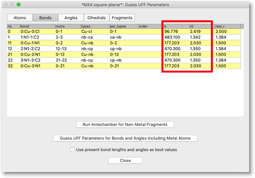
You can check the "Angles" page as well. Check the columns "k" and "a0", for the force constant and equilibrium bond angle. Note that, in the case of square planar or octahedral metal center, there are "cis" and "trans" angles. The program will assign "trans" if the current bond angle is larger than 135 degree, and "cis" otherwise. So, if your starting geometry is not quite optimal, be careful to check the angle parameters.

Close this dialog, and go into MM/MD calculations as usual. For example, you can perform energy minimization and get the structure like below.
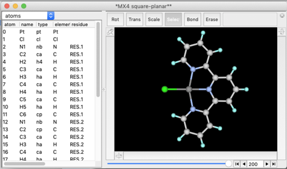
2. Compounds Containing Metal-π Bonds
Compounds containing metal-π bonds are also problematic in molecular mechanics calculations. The implementation of metal-π bonds in Molby is based on the proposal by Doman and coworkers (J. Am. Chem. Soc. 114, 7262-7272 (1992)). Herein we will see how to build a molecular model of ferrocene.

We start with the predefined structure "cyclopentadienyl."
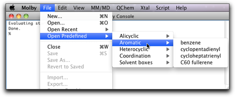
Select the five carbon atoms, and do "Create Pi Anchor" menu command.

"Pi anchor" is a virtual atom, whose coordinates are defined as the center of mass of the "parent" atoms. In this case, the parent atoms of the pi anchor is the carbon atoms of the Cp ring. In the main screen, the pi anchor is shown as a green dot, and it is connected to the parent atoms by a green thin bonds.
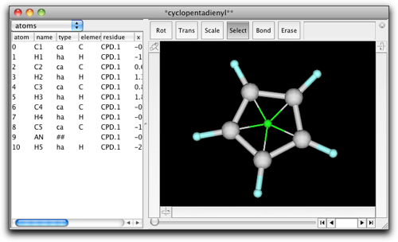
Rotate the ring to show the "side view" of the ring, while keeping the pi anchor barely visible. Create a bond from the pi anchor to a new atom. Change the new atom to Fe.
 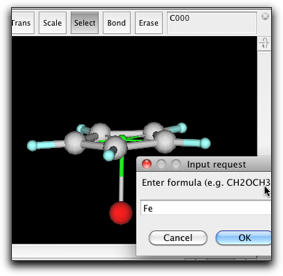
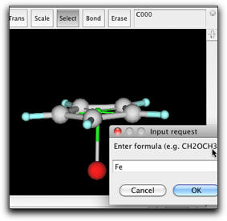
Copy the cyclopentadienyl ring and the pi anchor, and paste in the same window. Place the new ring to the appropriate position, and bond the Fe atom and the new pi anchor.
 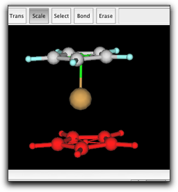
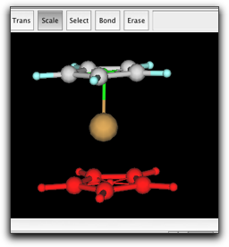
Finally, make a bond between the two pi anchors. This is necessary to describe the barrier for ring rotation. The anchor-anchor bond is shown as a half-transparent green stick.
The ring rotation can be described as a dihedral term in the form of "ring atom"-"pi anchor"-"metal"-"X". However, in the case of a linear metallocene, "X" is the other pi anchor. Since the "pi anchor"-"metal"-"pi anchor" angle is always close to 180 degree, the dihedral angle cannot be defined. For this reason, the linear metallocene requires special treatment of the dihedral term in the form of "ring atom"-"pi anchor"-"pi anchor"-"ring atom". That is why we need to make a bond between two pi anchors. This is not the case for the bent metallocenes (like Cp2TiCl2), or half-sandwich complexes.
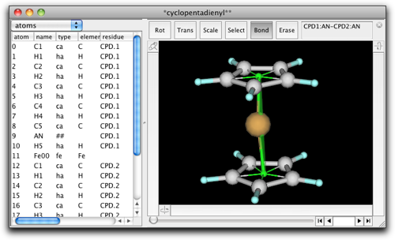
Now we can go on to the UFF dialog as before. This time, we skip the "non-metal fragments" part, because Antechamber cannot handle cyclopentadienyl anion. Our cyclopentadienyl ring already has correct atom types, so we will use them as they are.
Change the UFF type of the Fe atom to "Fe2+ octahedral".

Click on the "Bonds" label, and change the "r0" parameter of the two bonds of "##-fe" or "fe-##" type ("##" represents the pi anchor). This should be the metal-pi distance, which is 1.66 Å for ferrocene.
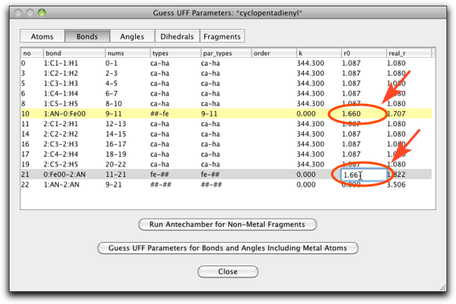
The "Angle" page should also be edited. The "a0" parameter is set to 90.0 for the "fe-##-ca" type angles (ten lines from the top), and 180.0 for the "##-fe-##" type angle (the last line).
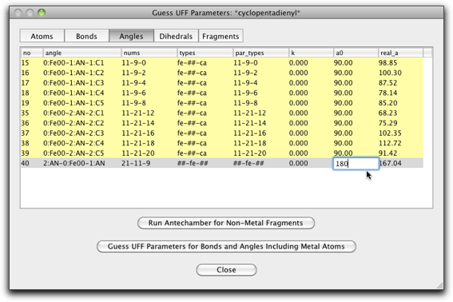
Hit the "Guess UFF Parameters..." button to complete the calculation of the UFF parameters.
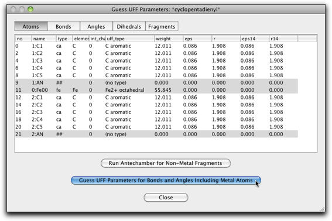
You can now try the MM/MD calculation. Energy minimization results in an eclipsed conformation. MD at 298K shows that the Cp rings freely rotate at this temperature.